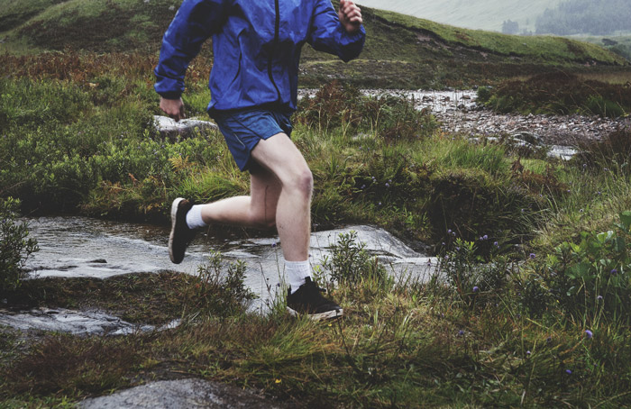

Fartlek คือ วิธีที่สนุกเพื่อเพิ่มความเร็วและความอดทนของคุณ
Fartlek คำศัพท์ภาษาสวีเดนที่หมายถึง “การเล่นกับความเร็ว” เป็นรูปแบบของการฝึกซ้อมตามช่วงเวลาหรือความเร็วที่
สามารถมีประสิทธิภาพ ในการปรับปรุงความเร็วในการวิ่งและความอดทนของร่างกาย

การฝึก Fartlek เกี่ยวข้องกับการก้าวที่แตกต่างกันตลอดการวิ่งสลับ ระหว่างเซ็กเมนต์ที่รวดเร็วและวิ่งเหยาะๆช้าๆ
ซึ่งแตกต่างจากการฝึกซ้อม Interval แบบดั้งเดิมที่ใช้เฉพาะส่วนที่กำหนดเวลาหรือวัดได้ fartlek จะไม่มีรูปแบบที่ตายตัว
ช่วงพักการทำงานสามารถขึ้นอยู่กับความรู้สึกของร่างกาย ด้วยการฝึกซ้อม fartlek เราสามารถทดสอบด้วยความเร็วและความอดทน
และทดสอบกับการเปลี่ยนแปลงของความเร็ว
นักวิ่งหลายคนโดยเฉพาะผู้เริ่มต้นจะเพลิดเพลินกับการฝึก fartlek เพราะมันเกี่ยวข้องกับความเร็ว
แต่มีความยืดหยุ่นมากกว่าและไม่ต้องการการฝึกซ้อมตามช่วงเวลาแบบดั้งเดิม ข้อดีอีกอย่างของการฝึกซ้อมที่ไม่จำเป็นต้องทำบนลู่วิ่ง
และสามารถทำได้ในภูมิประเทศทุกประเภท เช่น ถนน เส้นทาง หรือเนินเขา การฝึกซ้อม Fartlek ทำให้เกิดความเครียดเพิ่มขึ้นเพียงเล็กน้อย
ในที่สุดมันนำไปสู่ความเร็วที่เร็วขึ้นและปรับปรุงเกณฑ์แอนแอโรบิก